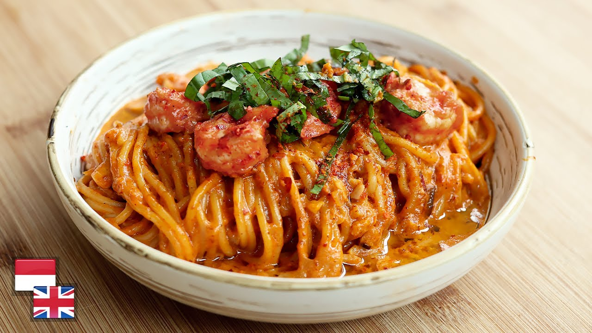

Rose Spaghetti Recipe

Description
Check out this easy home-made recipe for the highly requested rose sphagetti popular amongst korean cafes
Ingredients
- 300 g pasta of choice, I used penne
- 2 tablespoon butter
- 1 tablespoon olive oil
- 1 small red onion, minced
- 4 garlic cloves, minced
- 1.5 cups tomato passata
- 1 teaspoon dried basil
- 1 chicken bouillon cube, crumbled
- pinch sugar
- sprinkle of red chili flakes
- salt and pepper to taste
- 1/2 cup heavy cream
- 1/3-1/2 cup shredded mozzarella cheese
- 1/2 cup milk
Steps
- Cook the pasta to al dente according to package instructions, then drain, reserving some of the pasta water
- Heat a large skillet over medium heat and add the butter and olive oil. Once the butter has melted, add the onion and cook for 4-5 minutes until softened. Add the garlic and cook for another minute
- Add the tomato passata, dried basil, crumbled chicken bouillon cube, sugar, red chili flakes and salt and pepper to taste. Simmer for a few minutes, then add the cream, milk and the shredded mozzarella
- Add the cooked pasta, toss to combine and warm through for a few minutes. If sauce is too thick, add a splash of pasta water. Enjoy immediately!